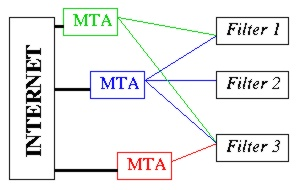

Architecture
Contents
- Design Goals
- Implementing Filtering Policies
- MTA - Filter Communication
Goals
The Sendmail Content Management API (Milter) provides an interface for
third-party software to validate and modify messages as they pass
through the mail transport system. Filters can process messages'
connection (IP) information, envelope protocol elements, message
headers, and/or message body contents, and modify a message's
recipients, headers, and body. The MTA configuration file specifies
which filters are to be applied, and in what order, allowing an
administrator to combine multiple independently-developed filters.
We expect to see both vendor-supplied, configurable mail filtering
applications and a multiplicity of script-like filters designed by and
for MTA administrators. A certain degree of coding sophistication and
domain knowledge on the part of the filter provider is assumed. This
allows filters to exercise fine-grained control at the SMTP level.
However, as will be seen in the example, many filtering applications
can be written with relatively little protocol knowledge.
Given these expectations, the API is designed to achieve the following
goals:
- Safety/security.
Filter processes should not need to run as root
(of course, they can if required, but that is a local issue);
this will simplify coding
and limit the impact of security flaws in the filter program.
- Reliability.
Coding failures in a Milter process that cause that process
to hang or core-dump
should not stop mail delivery.
Faced with such a failure,
sendmail should use a default mechanism,
either behaving as if the filter were not present
or as if a required resource were unavailable.
The latter failure mode will generally have sendmail return
a 4xx SMTP code (although in later phases of the SMTP protocol
it may cause the mail to be queued for later processing).
- Simplicity.
The API should make implementation of a new filter
no more difficult than absolutely necessary.
Subgoals include:
- Encourage good thread practice
by defining thread-clean interfaces including local data hooks.
- Provide all interfaces required
while avoiding unnecessary pedanticism.
- Performance.
Simple filters should not seriously impact overall MTA performance.
Implementing Filtering Policies
Milter is designed to allow a server administrator to combine
third-party filters to implement a desired mail filtering policy. For
example, if a site wished to scan incoming mail for viruses on several
platforms, eliminate unsolicited commercial email, and append a mandated
footer to selected incoming messages, the administrator could configure
the MTA to filter messages first through a server based anti-virus
engine, then via a large-scale spam-catching service, and finally
append the desired footer if the message still met requisite criteria.
Any of these filters could be added or changed independently.
Thus the site administrator, not the filter writer, controls the
overall mail filtering environment. In particular, he/she must decide
which filters are run, in what order they are run, and how they
communicate with the MTA. These parameters, as well as the
actions to be taken if a filter becomes unavailable, are selectable
during MTA configuration. Further
details are available later in this document.
MTA - Filter communication
Filters run as separate processes, outside of the sendmail address
space. The benefits of this are threefold:
- The filter need not run with "root" permissions, thereby
avoiding a large family of potential security problems.
- Failures in a particular filter will not affect the MTA or
other filters.
- The filter can potentially have higher performance because of
the parallelism inherent in multiple processes.
Each filter may communicate with multiple MTAs at the same time over
local or remote connections, using multiple threads of execution. Figure 1 illustrates a possible network of
communication channels between a site's filters, its MTAs, and other
MTAs on the network:

Figure 1: A set of MTA's interacting with a set of filters.
The Milter library (libmilter) implements the communication protocol.
It accepts connections from various MTAs, passes the relevant data to
the filter through callbacks, then makes appropriate responses based
on return codes. A filter may also send data to the MTA as a result
of library calls. Figure 2 shows a single
filter process processing messages from two MTAs:
 Figure 2: A filter handling simultaneous requests from two MTA's.
Figure 2: A filter handling simultaneous requests from two MTA's.
Copyright (c) 2000, 2003 Sendmail, Inc. and its suppliers.
All rights reserved.
By using this file, you agree to the terms and conditions set
forth in the LICENSE.